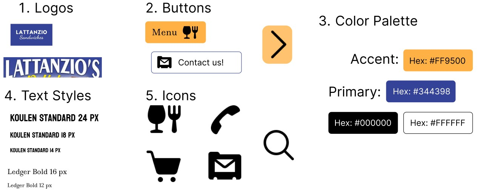
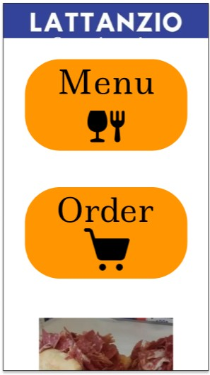
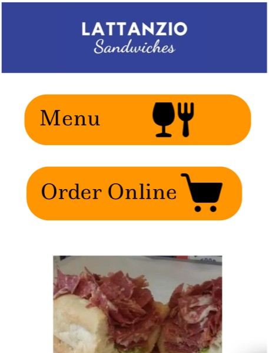
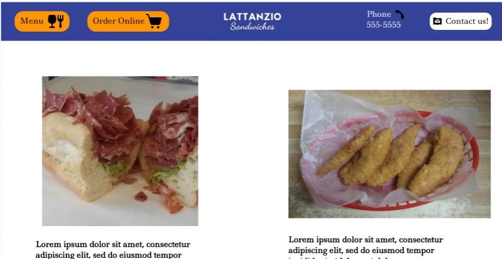

Introduction
This webpage is a presentation of my workflow in redesigning a website I found online. I started by looking into potential problems of the website. Then, I made a visual redesign in Figma. Finally, I created the redesign with html and css with responsiveness, so that it can be used on different .
Part 1: Identifying A Usability Problem
I found this website lattanziosandwiches.com that looked as if it would be a good specimen to analyze and redesign. I would measure the potential problems by five metrics: Efficiency, Learnability, Memorability, Conceptual Model, and Accessibility
Efficiency
- In terms of efficiency, I don’t think the page layout is helpful for the average customer. When looking at a restaurant, the first thing one might look for is the food. To find it, you’d have to scroll down.
Learnability
- The buttons you need to find the information you want are hidden in a pop-up menu that is not intuitive to all users.
Memorability
- I think that memorability may be difficult to achieve due to how the website has its buttons organized.
Conceptual Model
- The colors can be used in a better way to help guide the user down the page and to what they need.
- Right now with how the website is organized, their goals seem either unclear or mismatched.
Accessibility
- One big issue right off the bat is the lack of labels on all of the graphics. There are pictures of the food, but also there are graphics that contain important information like the name of the restaurant, the address and social media information.
- There are some issues with the reflexive response. For example, the pop up menu doesn’t work on phones or vertical screens very well.
- There is also an issue with some of the fonts, which can be difficult for the user to read.
I also used WebAIM WAVE for a deeper analysis of the website. I do agree with most of what WebAIM WAVE has detected. I would add that there can be a consideration for the readability of certain fonts. For the most part, I appreciate that it pointed out the lack of aria labels of the website.
Part 2: Visual Redesign
With these issues in mind, I knew I wanted to do several things:
- I plan to keep the logo and name at the very top so that users can more easily learn and recognize the restaurant. This will make it easier for them to use the website.
- I also will made sure to include the buttons close to the top so that the users don’t have to hunt through the website to find the menu.
- The buttons will have icons along with titles, so that it is more easily accessible.
- Every graphic and image will have an aria label for better accessibility.
- I will keep the buttons at the top of the webpage to help return users to remember the site and to achieve better efficiency.
- The colors will also work so that the information is more cohesive and intuitive.
I set these things as my goals and started with a visual design style guide that would keep my choices consistent within the website.
Finally, I created three mockups of different sizes. One for a mobile phone, one for a tablet and one for a large computer.
For the phone, I think flexbox would be ideal, since the website would be organized in a column. There would be minimal margins on the sides. The buttons may also need to be simplified or taken out.
For the tablet, the buttons would be placed outside of the header, and this row form can be achieved with flexbox. The buttons may need to be simplified to fit, so the icons may be cut leaving only the text. There are margins on the sides.
For the computer, I think flexbox would be an ideal way to organize the items and buttons on the header nad generally for a simple website like this one. The computer will need to have set margins for things to be aligned.
Part 3: Responsive Redesign
After this work with the visual design elements, it was finally time to create the actual website with responsive elements. It can be found in this link: https://alexandramercedessantos.github.io/Responsive%20Redesign%20Project/Actual%20Responsive%20Redesign%20Website/Lattanzio.html . This was a wonderful experience where I got to learn the workflow of redesigning a website.